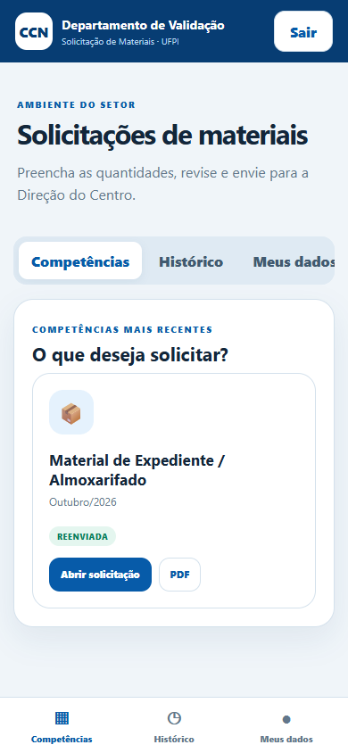
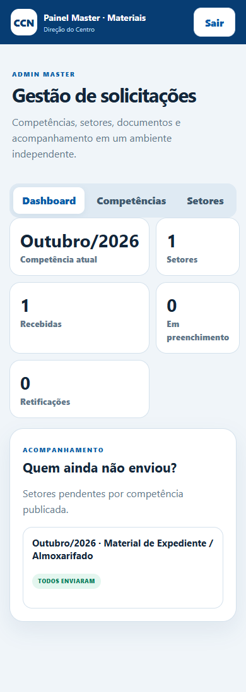

Materiais
CCN
Solicitações organizadas por setor, competências versionadas, geração de documentos e acompanhamento centralizado.
02Menos planilhas. Mais rastreabilidade.
Um sistema completo para transformar o fluxo de materiais em um processo digital: catálogo, pedido, conferência, PDF e visão master.
Abrir projeto funcionandoDemonstração interativa. Os dados ficam apenas no navegador; banco, e-mail e PDF de produção exigem hospedagem de servidor.


